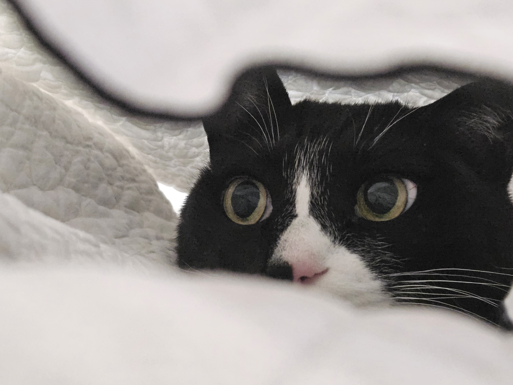
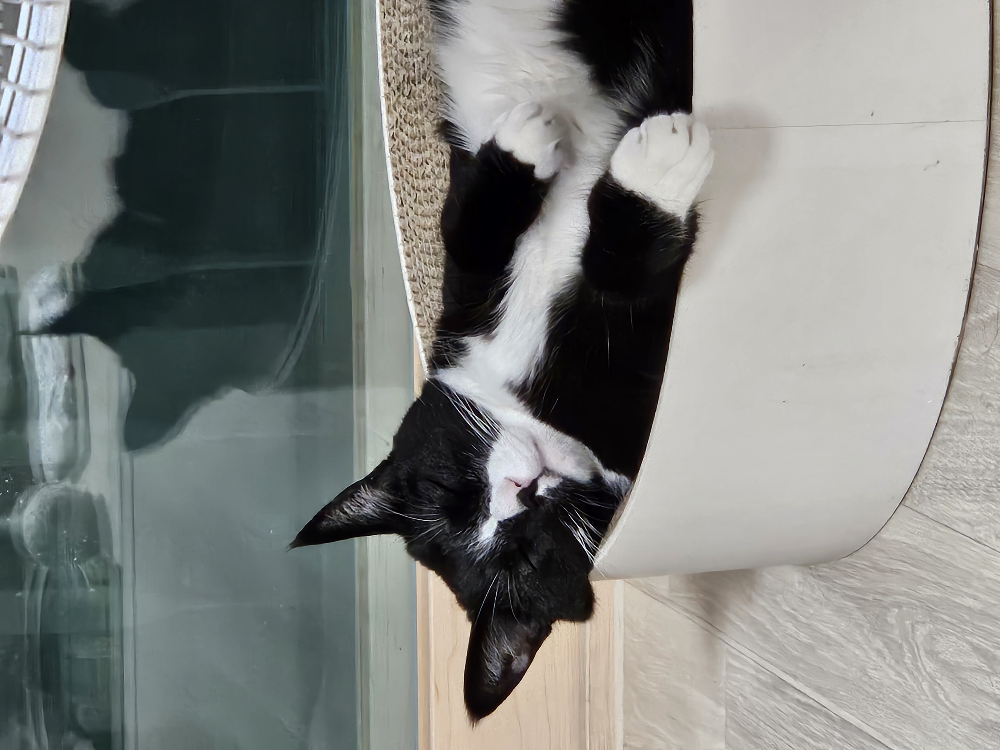
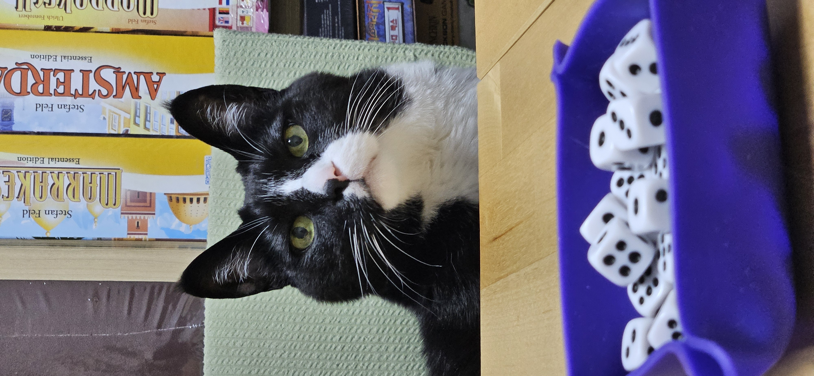
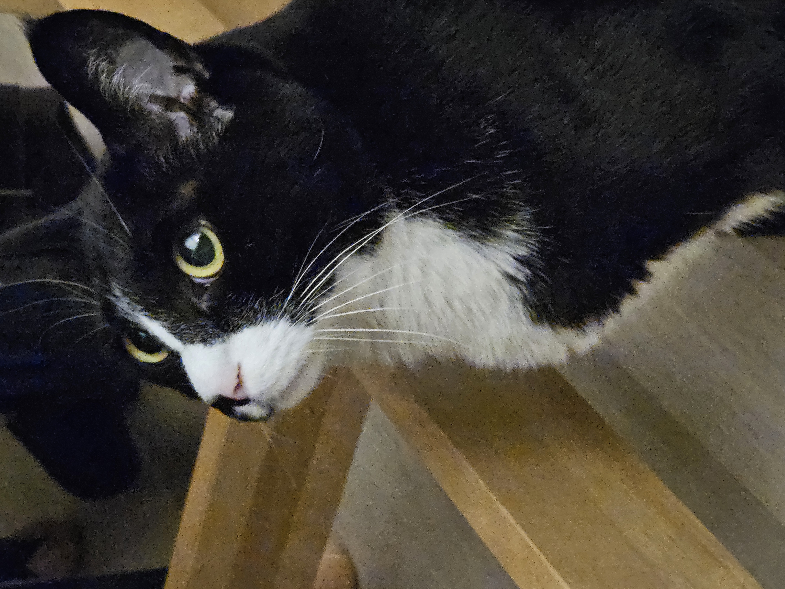

레옹 🐾






안녕하세요, 송혜림입니다!
별명은 염소 🐐
IT 인프라 엔지니어 출신으로, 지금은 AI / AX 엔지니어로 커리어를 전환 중입니다.
Unix/Linux 서버 운영, 서버 보안, 대규모 모니터링, PostgreSQL, HA 클러스터링 등
인프라 현장에서 쌓은 경험을 바탕으로, AI를 활용한 운영 자동화와 장애 대응 시스템을 만들고 있습니다.
보드게임 덕후
아날로그 세계로 초대합니다
뉴비는 언제나 환영합니다!
인프라 엔지니어링 경험과 AI 기술을 결합해
운영 자동화 및 장애 대응 시스템을 설계하는
AI 시스템 엔지니어 로 성장하는 것이 목표입니다.



